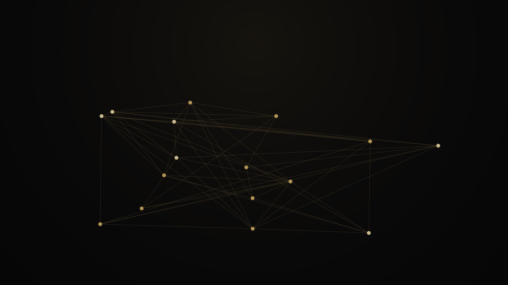
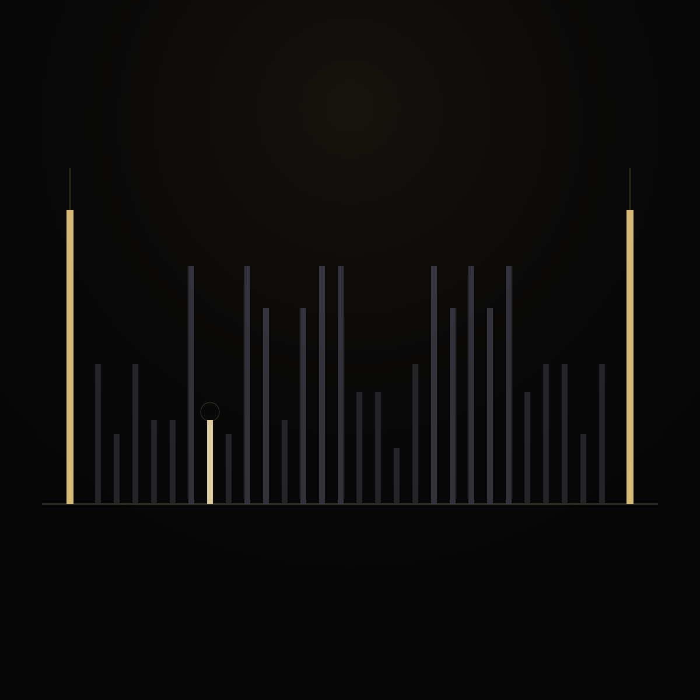
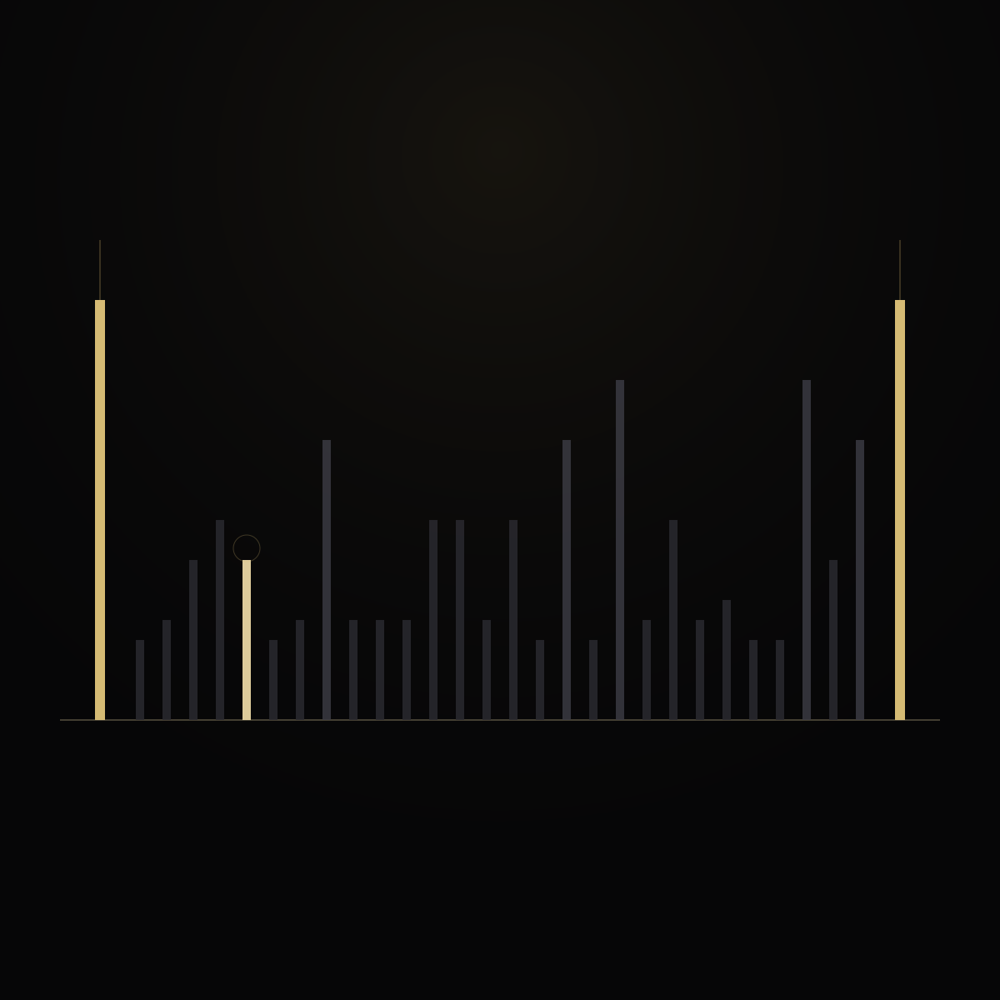
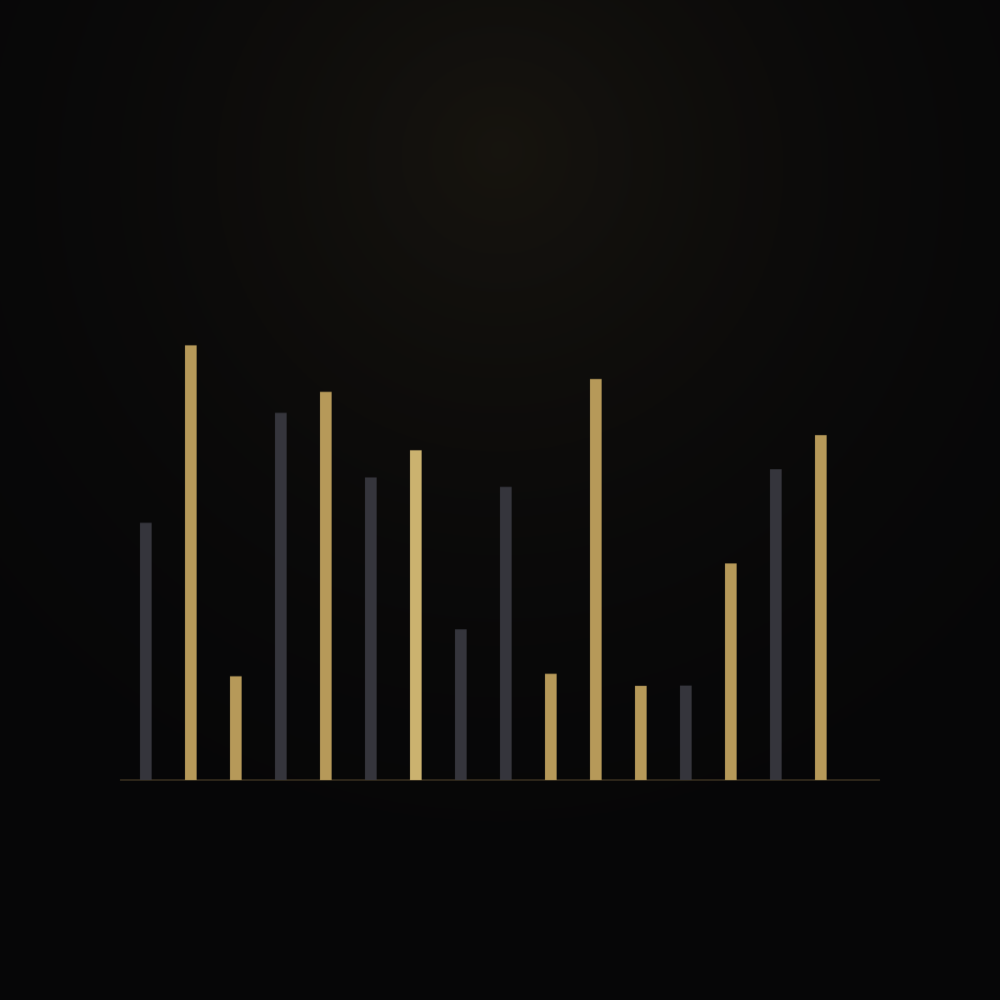
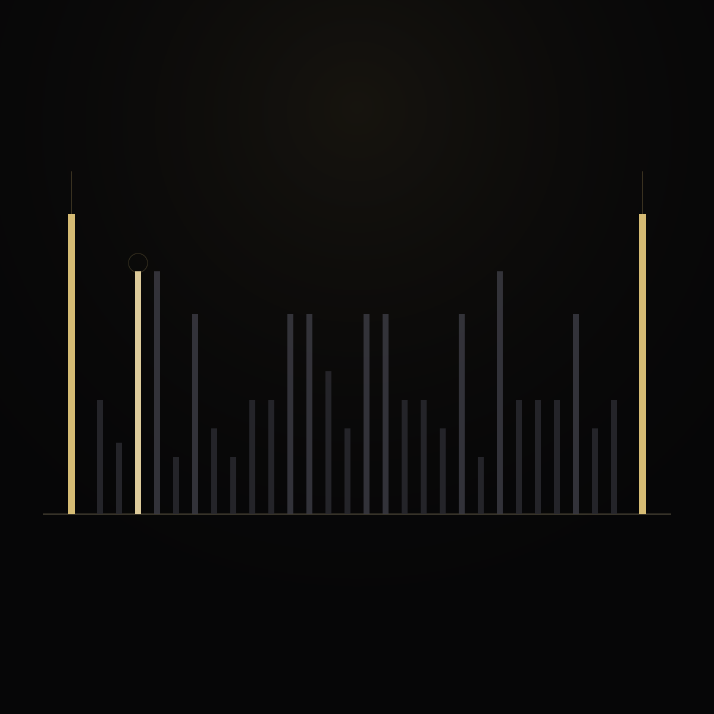
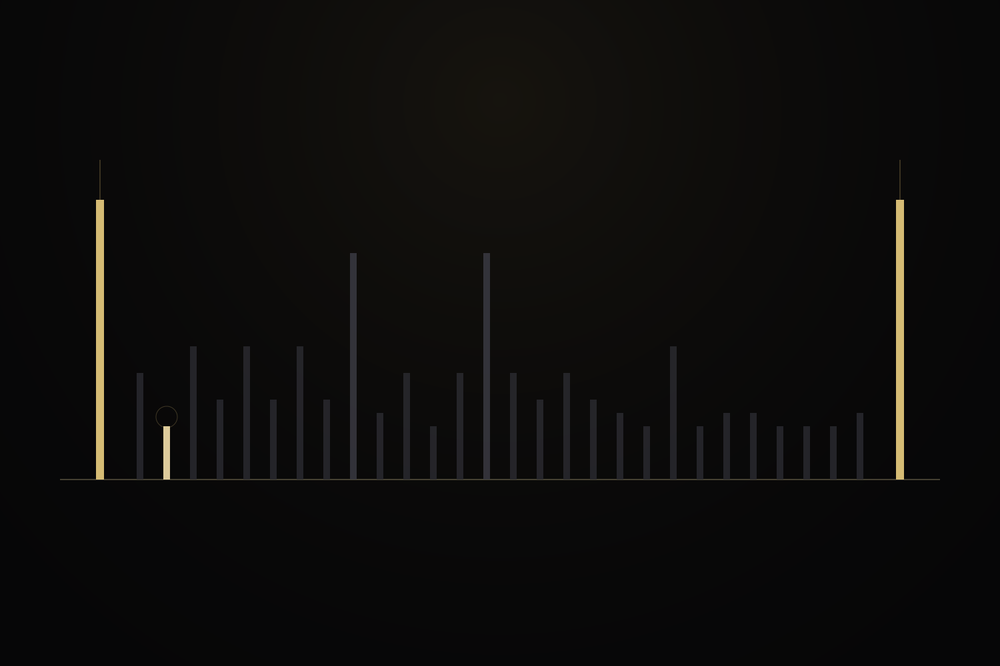
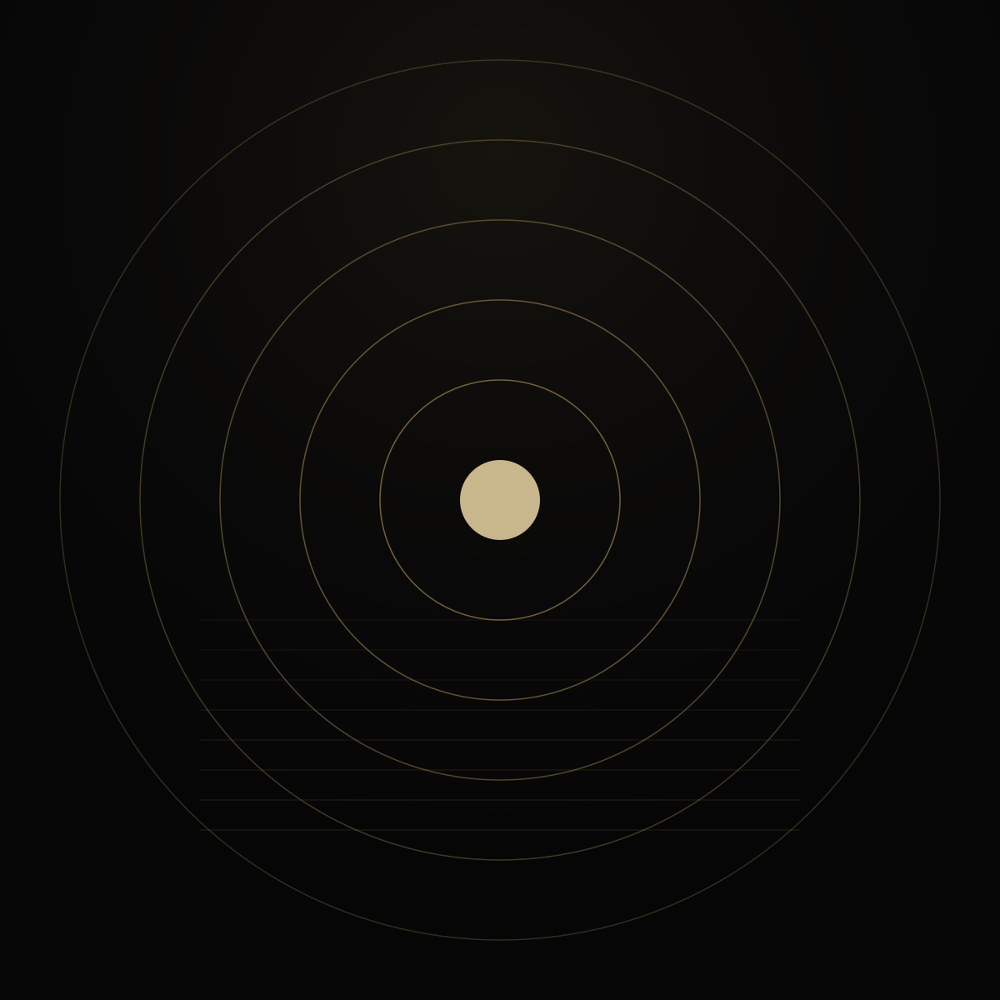

07 · Glossary
Names after objects
Project vocabulary is useful once you can picture the thing being named. Each entry hangs under a plate.










07 · Glossary
Project vocabulary is useful once you can picture the thing being named. Each entry hangs under a plate.






